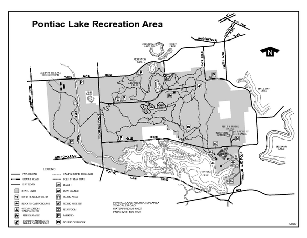

| A logo of some sort | Oakland County Trails | questions? |
|---|---|---|
Home > Parks > White Lake >Pontiac Lake Pontiac Lake is a state park that offers many anemities. Hunting, fishing, kayaking, camping, horseback riding, hiking, the list goes on. We're obviously focused on the Biking aspect and in this, Pontiac Lake sets a record. In my opinion (and that of many others) Pontiac Lake is one of the most difficult mountain biking courses in Michigan. I must agree, espescially for the first quarter of it. I know of several professional bikers who won't even ride the course alone. This is part one. I still haven't been able to figure out how to combine the videos to make them longer than 30 minutes. Although if I did that, it would take quite a while to upload to youTube. Even this 30 minute clips take 4.5 hours.
Part 2: And part 3. This one is really just for finishing up the course: |
 Above: Photos of the park. Most of these are taken by me. Below: A screenshot of the Google maps bike overlay. These are trails I rode and tracked with a GPS, then went into Google and created the layer. Layers are not embeddable, so clicking on the link will take you to Google maps. |
|